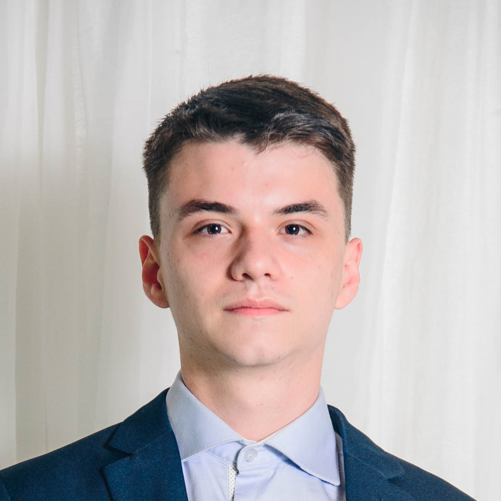

Apresentação profissional Fabrício Seben Welzel com HTML + CSS


Tenho 18 anos e entrei na área da tecnologia com 15 anos ao iniciar um curso técnico em Informática. Já tive bastante contato
com programação, mas acabei me afastando nos últimos meses pois o meu estágio era de Infraestrutura/Suporte técnico. Agora que
iniciei Sistemas para Internet na FIAP, pretendo estudar muita programação e mergulhar nos estudos!
Telefone: (51)997057730
Email: fabricio.seb1@gmail.com
Formação acadêmica
- Instituto Ivoti
- Ensino médio e técnico em informática
- fev. de 2019 - dez. de 2021
-
Lógica de programação, algoritmos (HTML, CSS, PHP, JS, Java, C, C#, SQL), manutenção de computadores, banco de dados,
design gráfico, redes de computadores, políticas e legislação, comunicação e relações humanas
- FIAP
- Sistemas para Internet
- fev. de 2022 - fev. de 2024
-
Desenvolvimento web responsivo front-end, incluindo HTML, CSS Javacript, HTML 5, Angular, Gulp, Bootstrap, Ruby, React, Sass, dentre outras linguagens, frameworks e bibliotecas. No desenvolvimento back-end, tecnologias como Node, PHP e outros.
Tendências mercadológicas como digital marketing, social media, SEO, Database & Datascience, Cloud Computing, UX & UI/Digital Design, desenvolvimento de apps mobile e Inteligência Artificial para chatbots e outras soluções inovadoras, utilizando metodologias ágeis, prototipação e gamificação.
Experiência profissional
- Estágio em Infraestrutura (set. 2021 - dez. 2021)
- Digital Business
-
Controle do parque lógico e tecnológico; Formatação e manutenção de notebooks; Logística de equipamentos; Controle da infraestrutura tecnológica da empresa; Atualização e criação de planilhas e indicadores da área; Manutenção preventiva; Controle de custos das plataformas e ferramentas utilizadas; Contato com colaboradores da empresa à respeito de dificuldades técnicas com tecnologias e equipamentos utilizados
Cursos e certificados
- FUNDAMENTOS DO DESIGN GRÁFICO - Fundação Bradesco
- ADMINISTRANDO BANCOS DE DADOS - Fundação Bradesco
- Cambridge English Level 1 Certificate in ESOL International (First)*